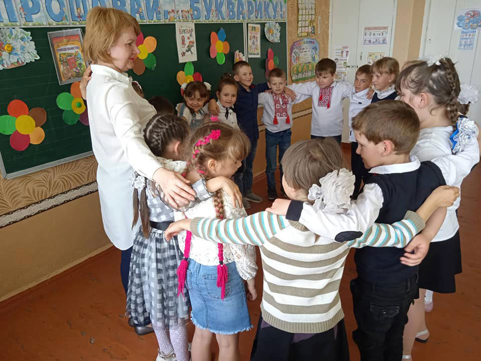

Відділ освіти, сім’ї, молоді, спорту, культури і туризму Комарської сільської ради
- Новини -
26.05.2021
Сьогодні здобувачі освіти 1 класу ЗЗСО І-ІІІ ступенів селища Шевченко подякували своєму першому другу: "Прощавай, Букварику, наш найперший друже. Ми тобі, Букварику, дякуємо дуже!"
Кажуть, великий шлях починається з маленького кроку. Свято Букваря – здавалося б, невеличкий, але дуже важливий крок у житті першокласників – освоєння Букваря. Відтепер першокласники вміють читати та писати, і ніщо не зупинить їх у захоплюючій подорожі Країною Знань!
Свято Букваря – одне з найзворушливіших свят нашої школи. Це не тільки прощання з першим підручником, який першокласники вже встигли полюбити. Це – демонстрація перших досягнень, сміливих кроків та творчих здобутків першокласників. Традиційно щороку першокласники відзначають своє перше досягнення в навчанні. Вони опанували найважливішу книгу в своєму житті – Буквар. Свято проведено класним керівником Тур Іриною Валеріївною.
25.05.2021.


Щорічно, 24 травня, в усіх слов'янських країнах відзначається День слов'янської писемності і культури на знак подяки і шани двох братів — Кирила і Мефодія, творців слов'янської писемності. До цієї дати долучився і Зеленогайський заклад освіти, у якому пройшли години спілкування «Мова і писемність у цікавих фактах» , виховні заходи «День писемності».
Певна рiч, вони можуть робити й таке враження, але можуть робити й зовсiм противне. Сон є, як се видно з попереднього, «пробою нашого мозку вияснити якесь донесене йому враження». З сього погляду поезiю можна прирiвняти до барвистої, але поодинокої нитки, а музику до штучної тканини. В якiй мiрi поети користають iз вражень, достарчених поодинокими змислами? По його думцi, краса се тiльки форма. Натомiсть ми бачимо, як поет уживає кольористичних ефектiв зовсiм не там, де вжив би їх маляр, а для характеристики психiчного настрою людей. Вiн мав ту силу, що мiг нам дати почути, що в вiчнiм, якого ми тiльки смiєм догадуватися, вiн наш брат. Деякi сучаснi французькi критики, головно Леметр, готовi зупинитися на тiм. В обох разах результат дуже подiбний нагляднi, пластичнi образи.